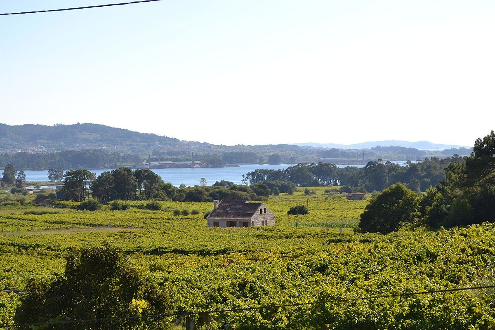

Rías Baixas
De l'albariño sur pergolas au bord de la mer, des pazos seigneuriaux, Cambados et les fruits de mer des rías : une route du vin aux senteurs d'Atlantique.

Les Rías Baixas occupent le sud-ouest de la Galice, dans la province de Pontevedra et une partie de celle de La Corogne. Le climat atlantique, doux et humide, et les sols granitiques marquent les vins d'albariño, cépage blanc aromatique et frais. Traditionnellement, la vigne est conduite sur de hautes pergolas soutenues par des piliers de pierre, qui éloignent les grappes de l'humidité du sol.
Val do Salnés et Cambados
Le Val do Salnés, autour de la ría d'Arousa, est la sous-zone la plus plantée. Cambados, considérée comme la capitale de l'albariño, célèbre début août la fête de l'Albariño, l'une des plus anciennes de Galice. Son quartier de Fefiñáns, avec son pazo et sa place, est l'une des images classiques de la route.
Condado do Tea et O Rosal
Au sud, le long du Minho et de la frontière portugaise, les sous-zones de Condado do Tea et d'O Rosal assemblent l'albariño avec la loureira, la treixadura et le caíño, dans des paysages de terrasses dominant le fleuve.
Pazos et mer
De nombreuses bodegas occupent d'anciens pazos, demeures seigneuriales aux jardins de camélias. La route se complète par les îles Cíes, dans le parc national des Îles Atlantiques, et par les villages de pêcheurs des rías.
Villes et villages
Cambados, Meaño, Meis, Ribadumia, O Rosal, Salvaterra de Miño, Pontevedra.
À voir
- Cambados et le pazo de Fefiñáns.
- Pergolas d'albariño dans le Salnés.
- Terrasses du Minho à O Rosal.
- Îles Cíes.
Quand partir
De juin à octobre ; fête de l'Albariño début août ; vendanges en septembre.
Gastronomie
Fruits de mer des rías, poulpe à la galicienne, empanada, poissons grillés.
Conseil
Associez une bodega le matin à un plateau de fruits de mer au port : l'albariño se comprend mieux face à la mer.
Domaines de la région dans l'encyclopédie
Celles qui portent la mention « visites » proposent, selon nos informations, des visites ou des activités œnotouristiques.
Informations indicatives. Horaires, tarifs et réservations changent : confirmez-les auprès de chaque domaine ou de l'office de tourisme avant de partir. L'abus d'alcool est dangereux pour la santé ; si vous buvez, ne conduisez pas.